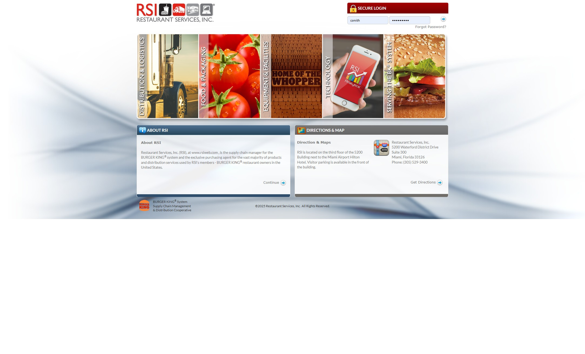
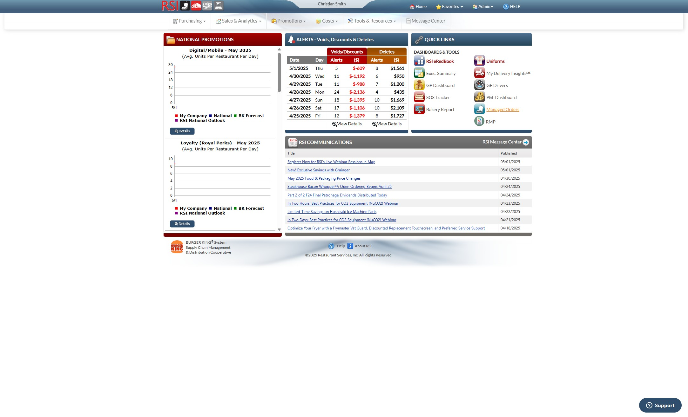
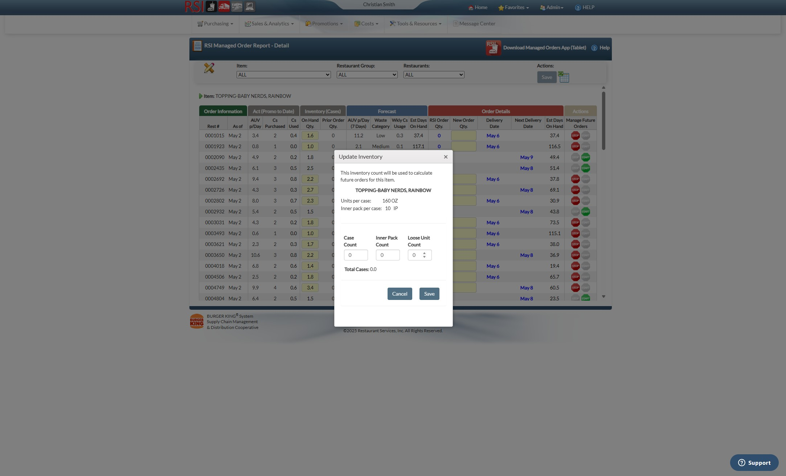
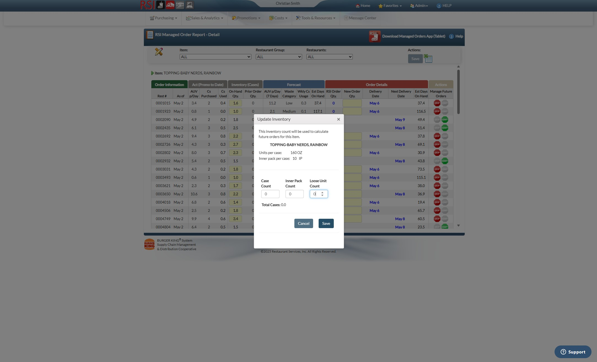
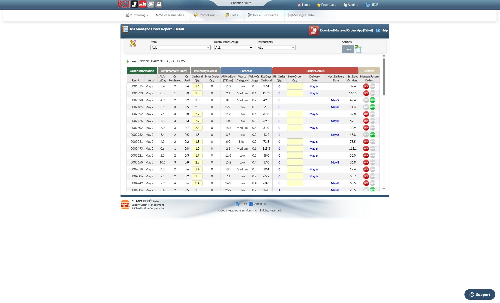

-
1Navigate to https://www.rsiweb.com/net/public/PubIndex.aspx

-
2Login.
-
3Click "Managed Orders"

-
4Click the "Item" dropdown box to pick the item you are trying to manage.
Adjust Onhand
-
5To adjust your on-hand, Click the number for your restaurant under "On Hand Qty"
-
6Adjust to your onhand.

-
7Click "Save"

Adjust Order Quantity
-
8Enter Quantity you would like on the next delivery date.
Start/Stop Ordering
-
9Click "Stop" icon to stop ordering. Click "Start" icon to resume ordering.

-
Warning
If you have it marked as stopped, you are unable to change "New Order Qty."